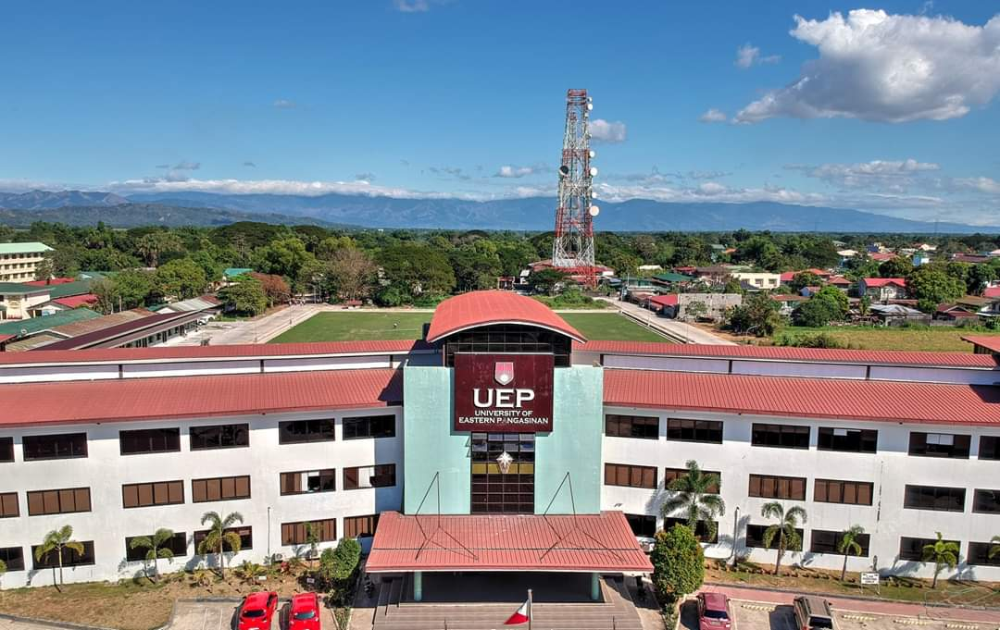

Campus Hub is the main online resource for students, faculty, and staff at University of Eastern Pangasinan. Whether you're a new student getting used to the campus or a returning student looking for quick access to services, this is your starting point.
UEP was founded in 2005 by Dr. Ramon V. Guico III. Dr. Guico's dissertation advocated for equitable education. The university began in a modest building in the old public market. Since then, it has grown into a modern campus along MacArthur Highway in Canarvacanan, Barangay, with Binalonan's countryside as a backdrop. It houses academic departments such as Criminology, Hospitality and Management, Business Administration, Education, Midwifery, and Information Technology.
The University of Eastern Pangasinan is home to a diverse group of students from all over the country. Our programs are designed to prepare students for professional careers and further academic study.
The university has nine undergraduate degree programs in Education, Hospitality Management, Criminal Justice Education, Business Administration, Information Technology, Midwifery, Accountancy, Accounting Information System, and Engineering. Class sizes are kept manageable so that students receive proper attention from their instructors.
There are different kinds of student organizations on campus, like academic clubs, cultural groups, volunteer teams, and sports clubs. Students are encouraged to join at least one organization to make friends and learn to lead.
All students must read and follow the rules in the Student Handbook. You can download copies from the portal.
The university offers many services to help students with different aspects of their education. Below is a summary of the offices and resources available on campus.
Helps students with scholarship applications, grant requests, and student loan processing. The office also manages work-study placements for students who qualify. It is on the second floor of the Finance Room.
It offers personal counseling, career guidance, and psychological support.
Manages enrollment, grade records, transcript requests, and graduation clearance. It is located on the ground floor of the Administration Building. The office is open from 7:30 AM to 3:00 PM, Monday through Friday.
The main library has books, academic journals, and digital resources. There are computer stations with internet access. Open from 7:30 AM to 5:00 PM, Monday through Saturday.
It offers basic medical consultations, first aid, and dental checkups for students who are currently enrolled. You must have a valid campus ID and log in to visit. The clinic is open from 8:00 AM to 4:00 PM, Monday through Saturday.
If you have any questions, concerns, or feedback, you can call us at (075) 562 5874 or send us a message on our Facebook page. You can also visit us in Binalonan, Pangasinan, Philippines, which is located along MacArthur Highway. Our school is ready to answer your questions.
Led by Renz Viernes. The other members are Sev Florenz Doctor, Ervin Baniqued, Jose Anjelo Evangelista, Ferdinand Gabayan, Terrence Dela Cruz, Brylle Torrentira, and Kyle Ayson.